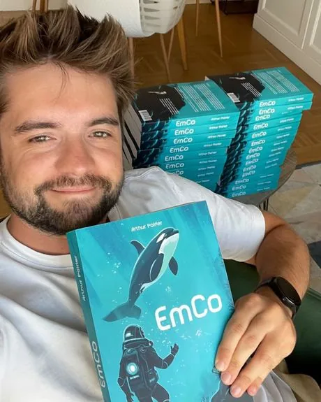

J'ai beaucoup apprécié travailler avec Mathis pour la conception de ma couverture. Tout au long du processus, il est resté extrêmement réactif, à l'écoute de mes remarques (même les plus pointilleuses), tout en formulant des propositions qui m'ont bien aidé. Je suis sincèrement satisfait du résultat, et je vous recommande volontiers de travailler avec lui !